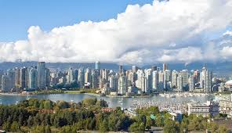

 Vancouver is a coastal seaport city in western Canada, located in the Lower Mainland region of British Columbia. As the most populous city in the province, the 2016 census recorded 631,486 people in the city, up from 603,502 in 2011. The Greater Vancouver area had a population of 2,463,431 in 2016, making it the third-largest metropolitan area in Canada. Vancouver has the highest population density in Canada, with over 5,400 people per square kilometre, which makes it the fifth-most densely populated city with over 250,000 residents in North America, behind New York City, Guadalajara, San Francisco, and Mexico City according to the 2011 census. Vancouver is one of the most ethnically and linguistically diverse cities in Canada according to that census; 52% of its residents have a first language other than English. 48.9% have neither English nor French as their first language. Approximately 30% of the city's inhabitants are of Chinese heritage. Vancouver is consistently named as one of the top five worldwide cities for livability and quality of life, and the Economist Intelligence Unit acknowledged it as the first city ranked among the top-ten of the world's most well-living cities for five consecutive years. Vancouver was originally named Gastown.
Canada page